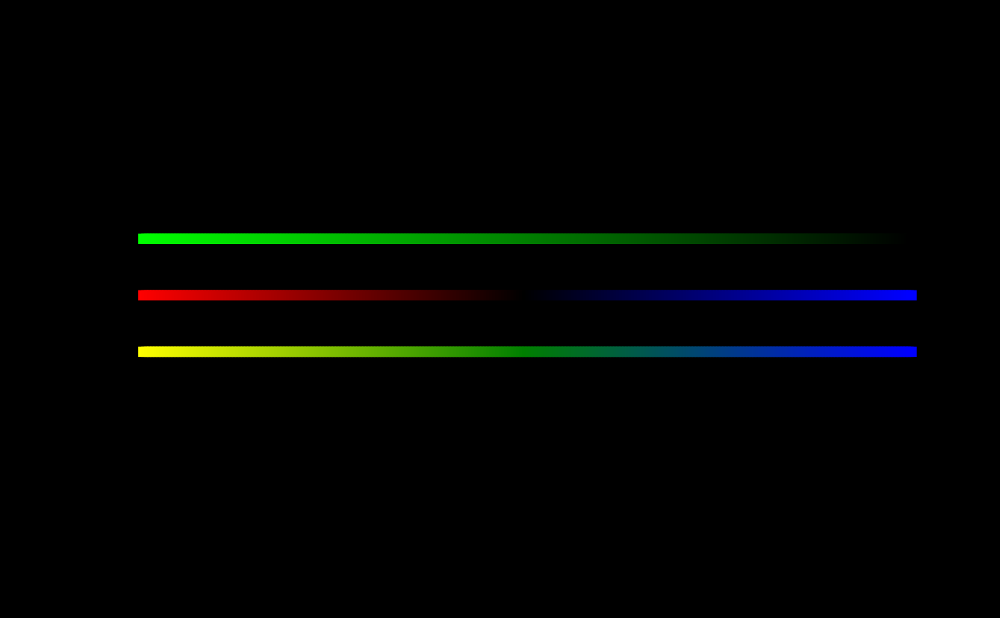

Vectorized additive mixing of colors in RGB space.
Usage
mixRGB(c1, c2, output = c("hex", "rgb"))See also
Other colormixing functions:
mixHSV()
Examples
# with black background
a <- GiottoVisuals::simple_palette_factory(c("green", "black"))(255)
b <- GiottoVisuals::simple_palette_factory(c("red", "black", "blue"))(255)
x <- mixRGB(a, b)
op <- par(no.readonly = TRUE)
par(bg = "black")
# plot input color vectors
plot(seq(255),
y = rep(2, 255), col = a, pch = 15, ylim = c(0, 3),
bg = "black"
)
points(seq(255), y = rep(1.5, 255), col = b, pch = 15)
# plot mixture
points(seq(255), y = rep(1, 255), col = x, pch = 15)

par(op)